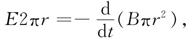
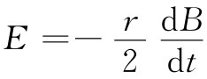
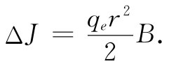
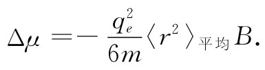

图34-4 作用于原子中电子上的感生电力
接下来我们从经典观点来考察抗磁性。它可以用几种方法算出，但其中一种巧妙的办法则是这样的。假设在一个原子附近我们慢慢地开动磁场。当磁场改变时，由于磁感应而产生一电场 。按照法拉第定律，E环绕任一闭合路径的线积分等于穿过该路径的磁通量的变化率。假设我们选取这样一条路径Γ，即是与该原子中心同心的一个半径为r的圆周，如图34-4所示。环绕这一路径的平均切向电场E由下式给出：

因而就有一个强度为

的旋转电场。
作用于原子中一个电子上的这个感生电场会产生一个等于-qe Er的转矩，它必然等于角动量的变化率dJ/dt：
从零场开始对时间积分，我们就求得由于开动磁场而引起的角动量改变
 （34.15）
这就是当场开动时由于造成电子转动而引起的额外角动量。
这附加的角动量产生附加的磁矩，由于那是一种轨道 运动，所以附加磁矩恰等于-qe /（2m）倍的角动量。这感生的反抗磁矩为
式中负号（正如你通过应用楞次定律就可以看得出它是正确的）意味着这附加磁矩与磁场反向。
我们想要把式（34.16）写成稍微不同的形式。在该式中出现的r2 是指从原子中通过的平行于B的轴量起的距离的平方，因而若B沿着z方向，则它为x2 +y2 。如果我们所考虑的是球对称原子（或对固有轴在所有方向的原子做平均），则x2 +y2 的平均值将是真正从原子中心点 量起的径向距离平方的平均值的2/3倍。因此，把式（34.16）写成下式往往更加方便：
 （34.17）
总之，我们已求得一个与磁场B成正比而方向相反的、感生的原子磁矩，这就是物质的抗磁性。这个磁效应是造成一非均匀磁场中作用于一块铋上的那种小力的主要原因（你有可能通过下述办法计算出这个力，即算出这些感生矩在磁场中的能量，并弄清楚当该材料移进或移出高场区时这能量究竟如何变化）。
我们还剩下这么一个问题：半径的平方平均值〈r2 〉平均 是什么？经典力学不能提供任何答案。我们必须回去并用量子力学重新开始。在原子内部我们不能确实说出电子在哪里，而只知道它将位于某处的概率。若把〈r2 〉平均 理解为距中心距离的平方对概率分布的平均值，则由量子力学所给出的抗磁矩就恰恰与式（34.17）相同。当然，这个式子是关于一个电子的磁矩。总磁矩应由对原子内所有各电子求和给出。令人惊异的事情是，经典论证与量子力学都会给出相同的答案，虽则正如我们将要看到的，给出式（34.17）的经典论证在经典力学中实际上并没有充分的根据。
即使原子已经有了永久磁矩，相同的抗磁效应依然会发生，此时系统将在磁场中进动。当整个原子进动时，它取得一个附加的小角速度，而这个缓慢转动又会产生一个代表对该磁矩修正的小电流。这不过是用另一种方式表示的抗磁效应。但我们在谈论顺磁性时实在无需为它操心。如果这抗磁效应像刚才所做的那样先行算出，则我们不必对来自进动方面的那个附加小电流留意，它已经包含在抗磁性项之内了。